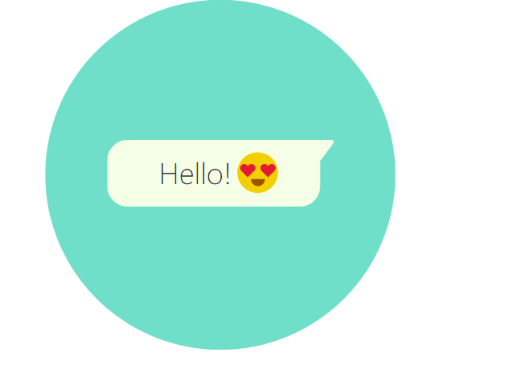

WhatsApp Security
Privacy and Security is in our DNA
From day one, we built WhatsApp to help you stay in touch with friends, share vital information during natural disasters, reconnect with separated families, or seek a better life. Some of your most personal moments are shared with WhatsApp, which is why we built end-to-end encryption into our app. When end-to-end encrypted, your messages, photos, videos, voice messages, documents, and calls are secured from falling into the wrong hands.

Personal Messaging
WhatsApp's end-to-end encryption is used when you message another person using WhatsApp Messenger. End-to-end encryption ensures only you and the person you're communicating with can read or listen to what is sent, and nobody in between, not even WhatsApp. This is because with end-to-end encryption, your messages are secured with a lock, and only the recipient and you have the special key needed to unlock and read them. All of this happens automatically: no need to turn on settings or set up special secret chats to secure your messages.
Business Messaging
Every WhatsApp message is protected by the same Signal encryption protocol that secures messages before they leave your device. When you message a WhatsApp business account, your message is delivered securely to the destination chosen by the business.
WhatsApp considers chats with businesses that use the WhatsApp Business app or manage and store customer messages themselves to be end-to-end encrypted. Once the message is received, it will be subject to the business’s own privacy practices. The business may designate a number of employees, or even other vendors, to process and respond to the message.
Some businesses1 will be able to choose WhatsApp’s parent company, Facebook, to securely store messages and respond to customers. You can always contact that business to learn more about its privacy practices.
Payments
Payments on WhatsApp, which are available in select countries, enable transfers between accounts at financial institutions. Card and bank numbers are stored encrypted and in a highly-secured network. However, because financial institutions can’t process transactions without receiving information related to these payments, these payments aren’t end-to-end encrypted.
You’re in control
WhatsApp wants to make sure you know what’s happening with your messages. If you don’t want to receive messages from a person or business, you can always block them directly from the chat or delete them from your contact list. We want to make sure you understand how your messages are being handled and have the options you need to make the right decisions for you.

Speak Freely
WhatsApp Calling lets you speak privately to your friends and family, even if they're in another country.

Messages that Stay with You
End-to-end encrypted messages are stored on your device and not WhatsApp servers after they are delivered.

See for Yourself
WhatsApp lets you check whether the calls you make and messages you send are end-to-end encrypted. Simply look for the indicator directly in the chat or in contact info or business info.

Get the Details
Read an in-depth technical explanation of WhatsApp's end-to-end encryption, developed in collaboration with Open Whisper Systems.
Check Security Advisories for regular security updates.
1 in 2021